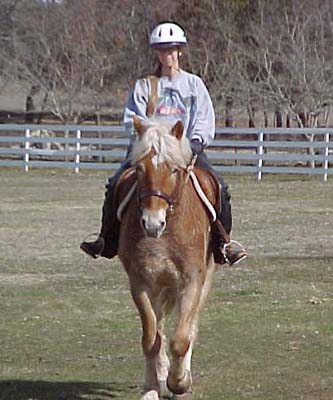
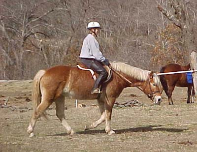
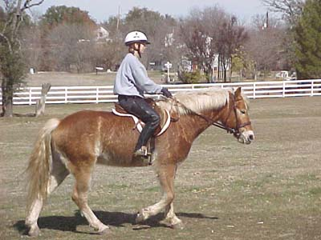

2/3/01
The first (well, second) Ride

Yes, he can go in a straight line

It's good that he likes to stretch his neck out, but he doesn't undertand being on the bit yet

Didn't realize getting on a new horse was going to be so difficult after Hamish. Adamir is definitely being steady and making it as easy as it can be.